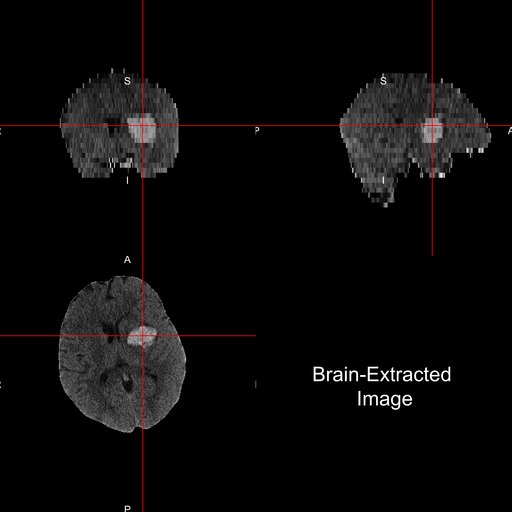
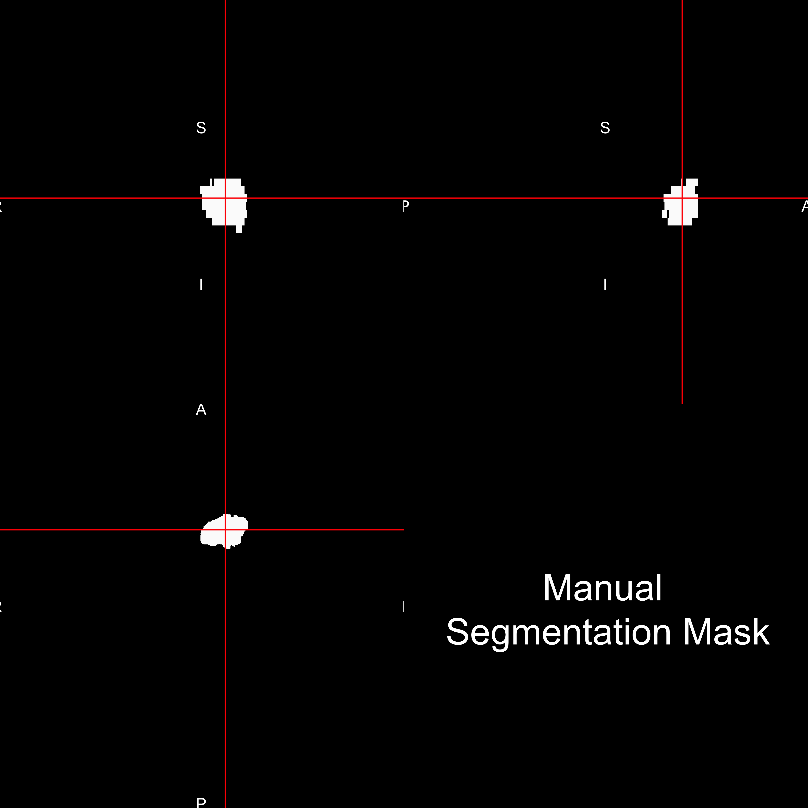
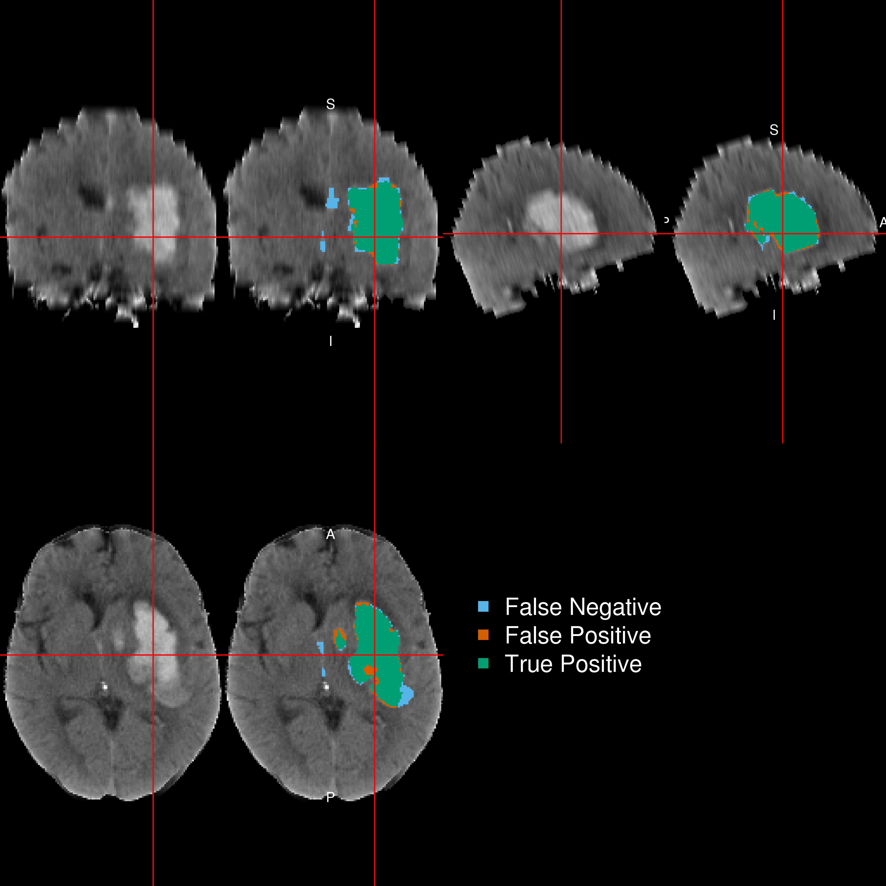
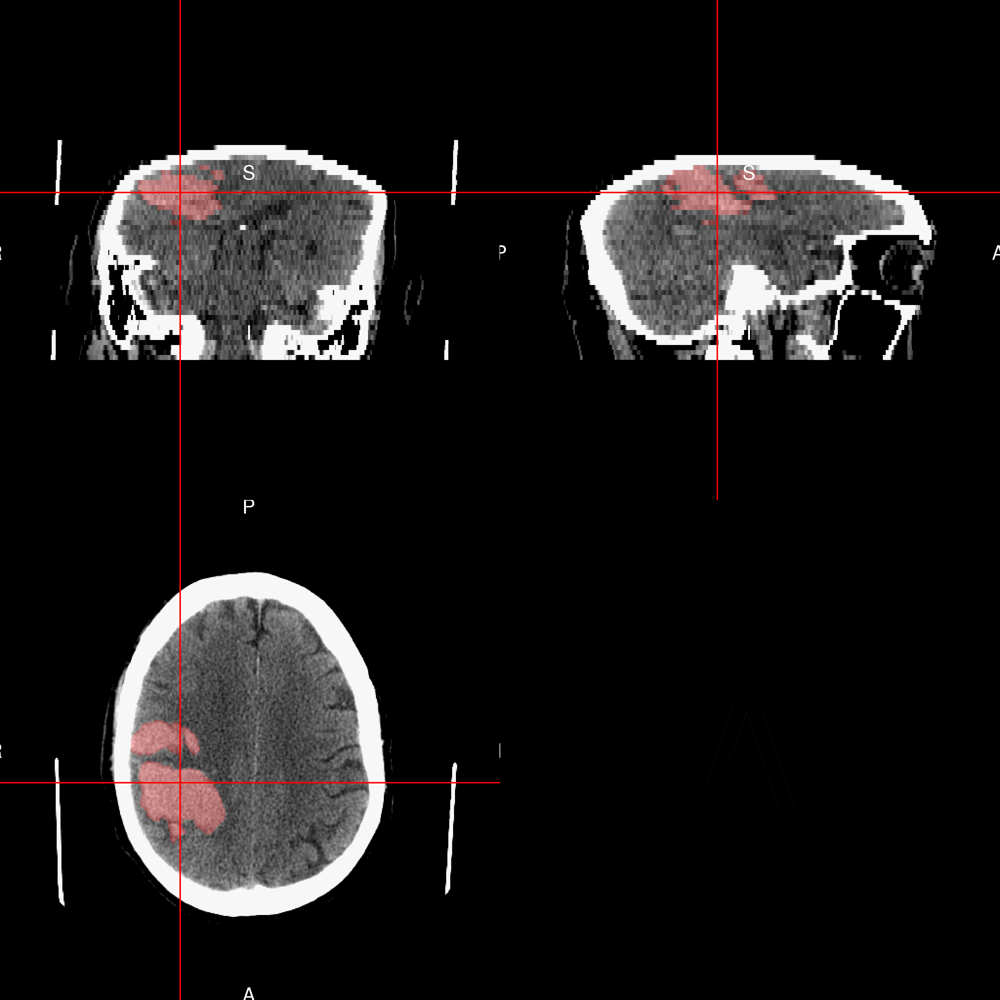
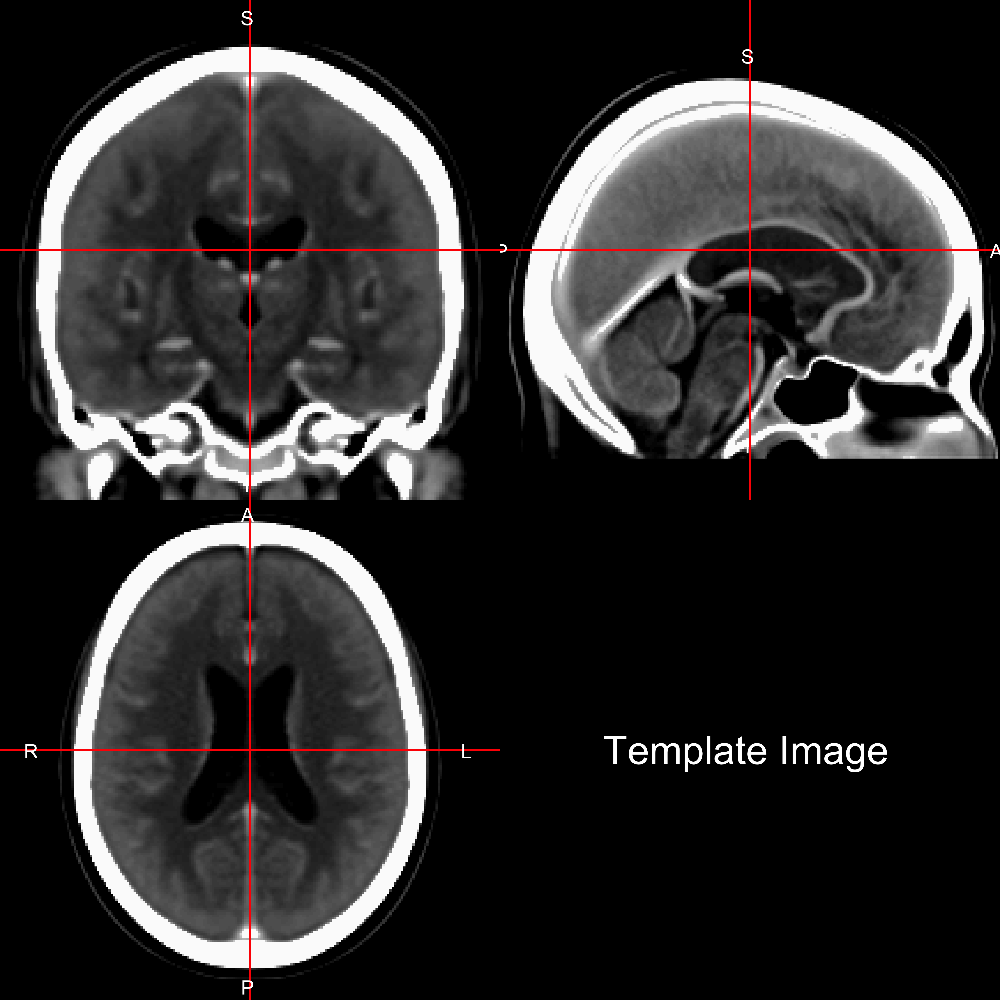
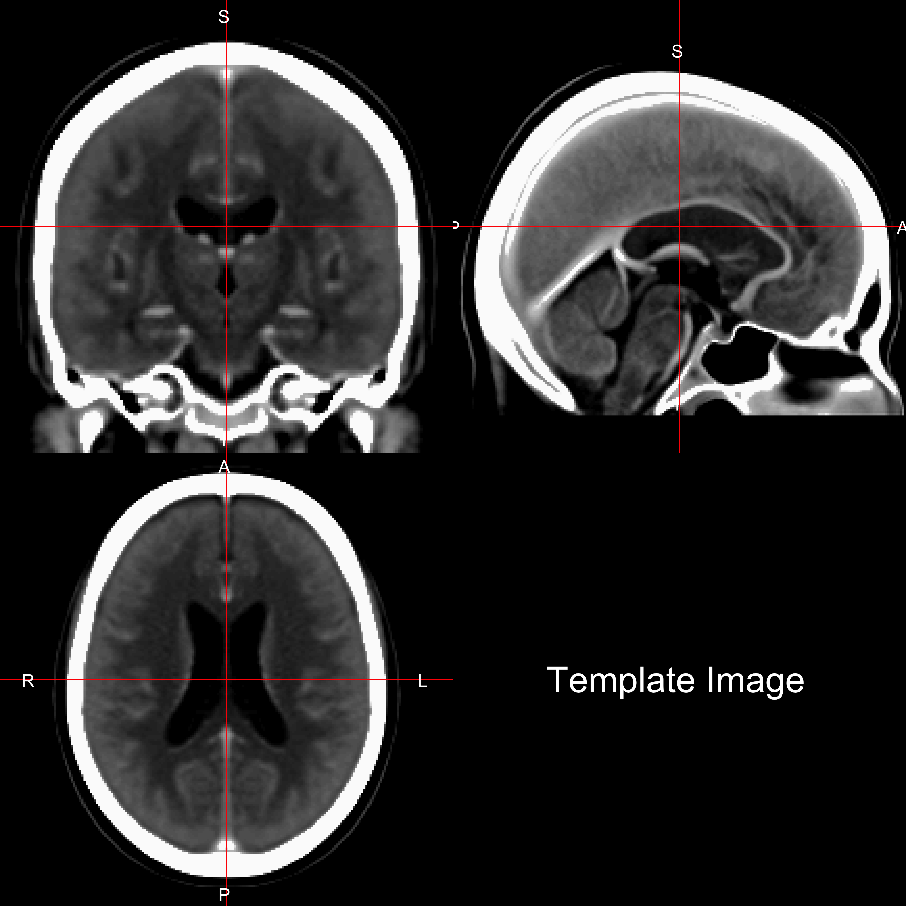
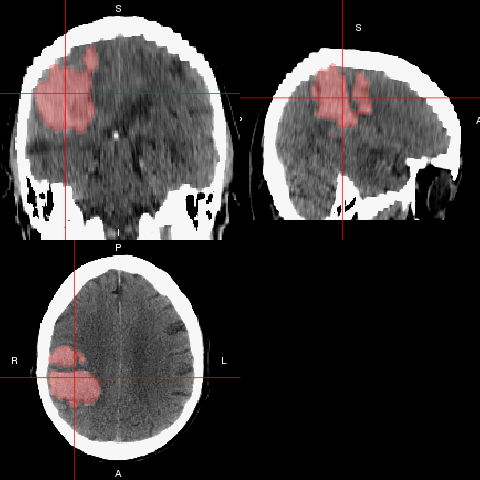
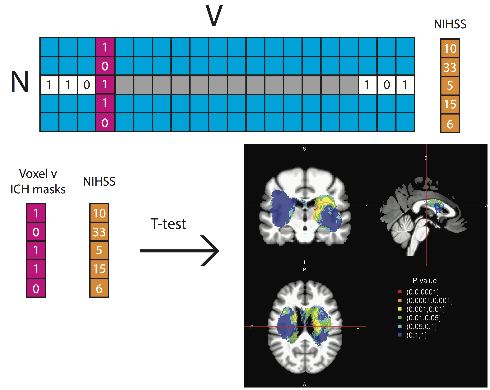
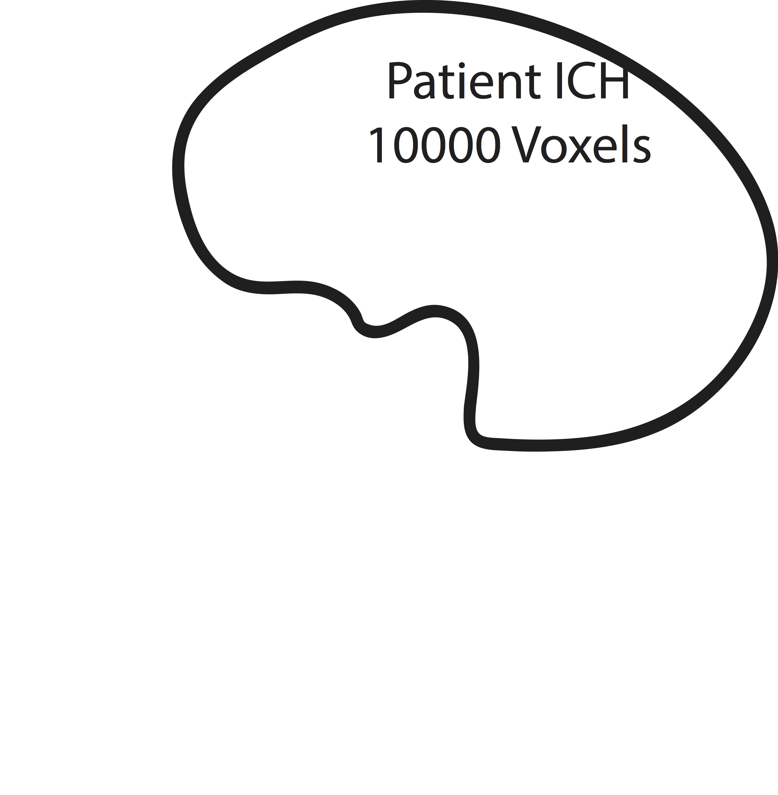

- Neuroimaging and R
- Segmentation/Classification of Computed Tomography (CT) scans
- Brain segmentation
- Hemorrhage segmentation
- Quantitative hemorrhage localization
March 21, 2016
Overview of Work/Research
Overview of Work/Research
- Neuroimaging and R
- Segmentation/Classification of Computed Tomography (CT) scans
- Brain segmentation
- Hemorrhage segmentation
- Quantitative hemorrhage localization
Neuroimaging and R:
Creating Tools I Would Use
Authored R Packages:
- fslr
(Muschelli, John, et al. "fslr: Connecting the FSL Software with R." R JOURNAL 7.1 (2015): 163-175.)
- brainR
(Muschelli, John, Elizabeth Sweeney, and Ciprian Crainiceanu. "brainR: Interactive 3 and 4D Images of High Resolution Neuroimage Data." R JOURNAL 6.1 (2014): 42-48.)
- extrantsr
- ichseg
- dcm2niir
- matlabr
- spm12r
- drammsr
- itksnapr
- papayar
- WhiteStripe
- oasis
- SuBLIME
- googleCite
- diffr
- rscopus
Number of Downloads (CRAN packages)
From the cranlogs R package:
Neuroimaging Analysis in Stroke
The MISTIE Stroke Trial
- Minimally Invasive Surgery plus r-tPA for Intracerebral Hemorrhage Evacuation (MISTIE)
- Multi-center, multi-national Phase II clinical trial
- Patients with intracerebral hemorrhages (≥ 20 millilters)

When I stroke I don't mean ischemic

- Ischemic stroke - clot blocks oxygen/nutrients
- Tissue dies
Image from http://www.strokecenter.org/patients/about-stroke/ischemic-stroke/
When I stroke I don't mean ischemic

- Ischemic stroke - clot blocks oxygen/nutrients
- Tissue dies
Image from http://www.strokecenter.org/patients/about-stroke/ischemic-stroke/
What is Intracranial/Intracerebral hemorrhage?
- When a blood vessel ruptures into:
- Tissue ⇒ intracerebral hemorrhage (ICH)
- ≈ 13% of strokes

http://www.heartandstroke.com/site/c.ikIQLcMWJtE/b.3484153/k.7675/Stroke__Hemorrhagic_stroke.htm
X-ray Computed Tomography (CT) Scans


Terminology: Neuroimaging to Data/Statistics
- Segmentation ⇔ classification
- Image ⇔ 3-dimensional array
- Mask/Region of Interest ⇔ binary (0/1) image
- Registration ⇔ Spatial Normalization/Standarization
- "Lining up" Brains
Brain Segmentation of CT Scans
Problem: CT Scans Capture Everything

Brain Segmentation of CT Scans
Want to go from an image:

Brain Segmentation of CT scans
Want to go from an image:
To a brain-extracted image: 
Publicly Available code
- Muschelli, John, et al. "Validated automatic brain extraction of head CT images." NeuroImage 114 (2015): 379-385.
- R code: http://bit.ly/CTBET_RCODE - based on fslr
- bash code: http://bit.ly/CTBET_BASH
Larger ICH Volume ⇒ Worse Outcome
ICH Segmentation, Volume/Location Estimation
Want to go from a brain image:
To a binary hemorrhage mask: 
Subject Data used: 111 scans (1 per patient)
| Overall | |
|---|---|
| Age in Years: Mean (SD) | 60.8 (11.2) |
| Male: N (%) | 76 (68.5%) |
| Reader-Based Clot Location (%) | |
| Putamen | 68 (61.3) |
| Lobar | 33 (29.7) |
| Globus Pallidus | 6 ( 5.4) |
| Thalamus | 4 ( 3.6) |
| ICH Volume in mL: Mean (SD) | 37.4 (20.1) |
- Adults (inclusion criteria 18-80 years old)
- Mostly males
- Reader-classified Location of Hemorrhage
Image Representation: voxels (3D pixels)


Muschelli, John, Elizabeth Sweeney, and Ciprian Crainiceanu. "brainR: Interactive 3 and 4D Images of High Resolution Neuroimage Data." R JOURNAL 6.1 (2014): 42-48.
Step 1: Create Predictors of ICH 
Data Structure for One Patient

Step 2: Aggregate Data
Training Data Structure
- Stack together 10 randomly selected patients
- Train model/classifier on this design matrix

Step 3: Fit Models / Classifier
Let \(y_{i}(v)\) be the presence / absence of ICH for voxel \(v\) from person \(i\).
General model form: \[ P(Y_{i}(v) = 1) \propto f(X_{i}(v)) \]
Models Fit on the Training Data
- Logistic Regression: \(f(X_{i}(v)) = \text{expit} \left\{ \beta_0 + \sum_{k= 1}^{p} x_{i, k}(v)\beta_{k}\right\} \)
- Generalized Additive Model (Hastie, et al., 1990)
- fit using thin plate splines
- LASSO (Tibshirani, 1996; Friedman, et al., 2010): \[ \mathcal{L}\left(\left.Y_{i}(v) \right|\, f(X_i(v))\right) \propto \beta_0 + \sum_{k= 1}^{p} x_{i, k}(v) \beta_{k} + \lambda \sum_{k= 1}^{p} \left|\beta_{k}\right| \]
- Random Forests (Liaw, et al., 2002; Breiman, 2001)
\(f(X_{i}(v)) \propto\)

Predicted Volume Estimates True Volume 
Predicted Volume Estimates True Volume 
Patient with Median Overlap in Validation Set

Shiny Application: http://bit.ly/ICH_SEG 
Quantitative Hemorrhage Localization
Localization Goals
- Quantify of hemorrhage engagement of regions in the brain
- Create a 3-dimensional (3D) density map of hemorrhages in MISTIE population
- Determine if differences in location relate to stroke severity
- Generate a stroke region of engagement using within-sample validation
Register CT Image to Template
Original Image with Hemorrhage: 
Template Image:


Transformed Masks in Template Space
Registered Image with Hemorrhage: 
Registered Hemorrhage Mask:

Hemorrhage Engagement of Brain Regions
We can compare the area to the "Eve" segmentation map (Oishi, et al., 2008) which outlines structures:
Hemorrhage Engagement of Brain Regions
From this, we can calculate region-level engagement: \[ \text{Engagement}_r = \frac{ \sum\limits_{\text{Voxels in region r}} \text{Hemorrhage Mask} } {\sum \text{Hemorrhage Mask}} \times 100\% \nonumber \]
| Area | Engagement |
|---|---|
| Postcentral gyrus | 16.7 |
| Supramarginal gyrus | 10.8 |
| Superior parietal lobule | 10.4 |
| Postcentral white matter | 10.2 |
| Precentral gyrus | 8.2 |
- Can also give region engagement (e.g. 10% of putamen engaged)
- putamen, caudate, and globus pallidus not engaged
Population ICH Distribution
Aggregating Multiple Hemorrhage Masks
N - number of patients, V - number of voxels

Creating a Population-level ICH Distribution

Population ICH Distribution

What Areas Affect Stroke Severity
Measuring Stroke Severity
- Stroke-related impairment measured by NIH Stroke Scale (NIHSS) (Brott, et al., 1989)
- Multiple sub-domains
- Higher is worse (higher stroke severity)
| NIHSS Score | Stroke Severity |
|---|---|
| 0 | No Stroke Symptoms |
| 1-4 | Minor Stroke |
| 5-15 | Moderate Stroke |
| 16-20 | Moderate to Severe Stroke |
| 21-42 | Severe Stroke |
Voxel-wise Regression/T-tests
Let \(v\) be voxel
- \(\mu_{1}(v)\): mean NIHSS score in patients where \(ICH(v){=}1\)
- Similarly for \(\mu_{0}(v)\).
- At each voxel, ran a t-test: \(H_{0}(v):\mu_{1}(v)=\mu_{0}(v)\)
Only voxels where \(>10\) subjects had ICH \((V=166202)\)

Voxel-wise P-value Map

High Predictive Regions
Due to a large number of tests, a Bonferroni correction (or FDR) did not result in singificant p-values.
- Create a High Predictive Region (HPR) based on a threshold:
- For example, \(p < 0.01\)
WARNING: EXPLORATORY ANALYSIS AHEAD!
Threshold P-value Map at \(0.01\) ⇒ HPR

HPR Coverage
Calculate the overlap of the HPR for each scan \(i\) \[
\text{HPR Coverage}_i = \frac{\text{# Voxels classified ICH in HPR for scan } i}{\text{# Voxels in HPR}} \times 100\% \nonumber
\] 
HPR Coverage
Calculate the overlap of the HPR for each scan \(i\) \[ \text{HPR Coverage}_i = \frac{\text{# Voxels classified ICH in HPR for scan } i}{\text{# Voxels in HPR}} \times 100\% \nonumber \] 
HPR Coverage
Calculate the overlap of the HPR for each scan \(i\) \[
\text{HPR Coverage}_i = \frac{\text{# Voxels classified ICH in HPR for scan } i}{\text{# Voxels in HPR}} \times 100\% \nonumber
\] 
Coverage is 2000/20000 * 100 = 10%:
HPR Coverage Relationship with NIHSS

Standard Description of Location: Reader-Based
| Overall | |
|---|---|
| Age in Years: Mean (SD) | 60.8 (11.2) |
| Male: N (%) | 76 (68.5%) |
| Reader-Based Clot Location (%) | |
| Putamen | 68 (61.3) |
| Lobar | 33 (29.7) |
| Globus Pallidus | 6 ( 5.4) |
| Thalamus | 4 ( 3.6) |
| ICH Volume in mL: Mean (SD) | 37.4 (20.1) |
Known predictors of NIHSS
- Age
- ICH Volume (ICHVol)
- Sex
Null Model:
\[\begin{eqnarray} {\rm NIHSS}_i &=& \beta_0 + \gamma_1{\rm Age}_i +\gamma_2{\rm Sex}_i +\gamma_3{\rm ICHVol}_i + \epsilon_{i} \end{eqnarray}\]
Compare HPR to using Reader-Based Locations
Using the adjusted \(R^2\), we compared the HPR model:
\[\begin{eqnarray} {\rm NIHSS}_i &=& \beta_0 + \beta_1 {\rm Coverage}_i \\ &+& \gamma_1{\rm Age}_i +\gamma_2{\rm Sex}_i +\gamma_3{\rm ICHVol}_i + \epsilon_{i}\\ \end{eqnarray}\] to the reader-based model: \[\begin{eqnarray} {\rm NIHSS}_i &=& \beta_0 + \beta_1 I({\rm Lobar}_i) + \beta_2 I({\rm Globus\,Pallidus }_i) + \beta_3 I({\rm Thalamus}_i) \\ &+& \gamma_1{\rm Age}_i +\gamma_2{\rm Sex}_i +\gamma_3{\rm ICHVol}_i + \epsilon_{i} \end{eqnarray}\] where \(I(k)\) represents the indicator that ICH location was \(k\)
Testing if HPR is more Predictive than Reader
Likelihood ratio test (LRT) comparing HPR coverage model to null model: \(p < 0.001\)
LRT: Reader model vs. null model: \(p = 0.1844\)
Adjusted \(R^2\), Reader model: 0.129 vs. HPR coverage Model: 0.254
Nested Model Comparison:
LRT: Reader+HPR model vs. Reader-only model: \(p < 0.001\)
Reader+HPR model: \[\begin{eqnarray} {\rm NIHSS}_i &=& \beta_0 + \beta_1 I({\rm Lobar}_i) + \beta_2 I({\rm Globus\,Pallidus }_i) + \beta_3 I({\rm Thalamus}_i) \\ &+& \beta_4 {\rm Coverage}_i \\ &+& \gamma_1{\rm Age}_i +\gamma_2{\rm Sex}_i +\gamma_3{\rm ICHVol}_i + \epsilon_{i} \end{eqnarray}\]
Does HPR coverage perform better than chance?
Procedure (P):
- Fit voxel-wise models
- Collect the most predictive voxels
- Produce subject-level predictors by coalescing voxels
Problems:
- Multiplicity
- Double-dipping: Using the data twice
- Violates separation of exploratory and confirmatory analyses
Conclusions of Stroke Analyses
- We can segment ICH volume from CT scans
- We can create population-level ICH distributions
- Voxel-wise regression can show regions associated with severity
Conclusions of Stroke Analyses
- We can segment ICH volume from CT scans
- Incorporate variability of estimated volume
- We can create population-level ICH distributions
- Uncertainty measures of this
- Voxel-wise regression can show regions associated with severity
- Validate these regions (MISTIE III)
- Scalar on image regression